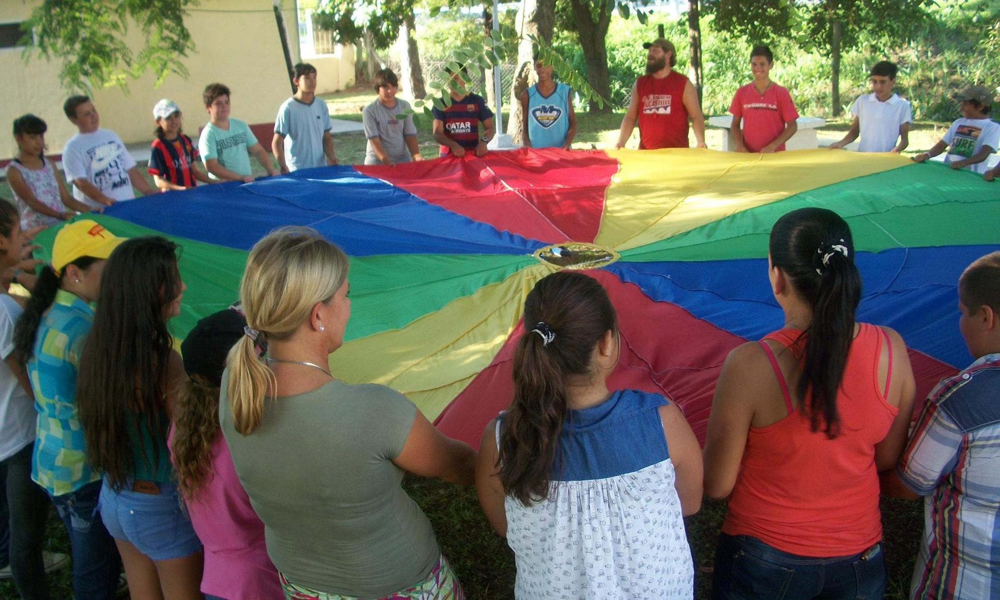

El ayudante técnico en el deporte (especializado en deporte), estará capacitado para: Auxiliar al técnico en Deporte, destacándose en su formación el "saber hacer" y el "cómo hacer". Apoyar la planificación, evaluación y gestión de proyectos o emprendimientos de carácter deportivo. Contribuir en la organización e implementación de campeonatos y actividades análogas. Contribuir al desarrollo de propuestas educativas vinculadas al deporte. Arbitrar a nivel amateur e infantil (Fútbol) y a nivel informal (en otros deportes), en relación al deporte por el que hayan optado en el último año.
3 años.
Bachiller Tecnológico en Deporte y Recreación. Auxiliar Técnico en el deporte elegido.
Las competencias construidas, desarrolladas y consolidadas durante los dos años posibilitarán al egresado: Nociones básicas sobre prevención, clínica, tratamiento y rehabilitación de las lesiones deportivas. Conocimiento de técnicas y estrategias de prevención, tratamiento y rehabilitación. Nociones sobre los adecuados procesos de hidratación necesarios para las diferentes actividades deportivas. Conocimiento sobre los cuidados de los pies, la inmovilización y traslado de los lesionados. Nociones en el manejo del equipo de Fisioterapia y rehabilitación. Ejecutar en las circunstancias que lo requieran la Reanimación Cardiopulmonar. Manejar lenguajes técnico-operativos que le posibilitarán actuar en el área. Ejecutar las tareas profesionales asegurando la calidad de los procesos y/o los productos. Desarrollar actividades laborales en forma individual o en equipo, bajo supervisión del profesional médico. Conocer las competencias y limitaciones en el desempeño de las funciones del asistente en masaje y rehabilitación deportiva.